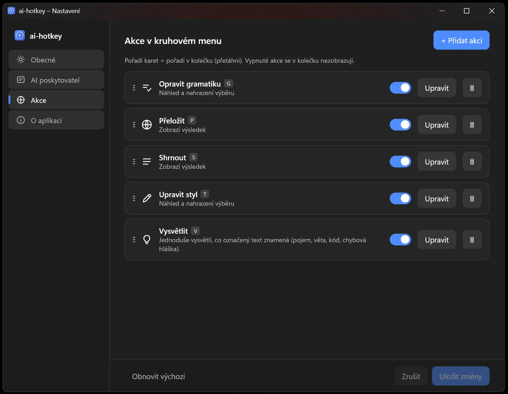

AI Lab/ai-hotkey
AI tam, kde zrovna píšu.
Označím text v libovolném programu, stisknu jednu zkratku a kolečko mi nabídne opravit, přeložit, shrnout nebo vysvětlit. Model běží doma na grafice, do cloudu jde jen to, co tam sám pošlu.
K čemu to je
Oprava, překlad a shrnutí bez přepínání oken
Většinu dne píšu: testovací scénáře, hlášení chyb, maily. A pořád dokola opravuju češtinu, překládám do angličtiny a zkracuju.
Teď označím text, stisknu zkratku a u kurzoru vyskočí kolečko s pěti akcemi. Za pár vteřin mám výsledek v panelu, u oprav i barevně, co se změnilo. Enter ho vloží místo původního textu, dřív se nic nepřepíše.
Funguje to v prohlížeči, v Jiře, v editoru i v Telegramu. A umělá inteligence běží u mě doma na grafické kartě.
Proč
Kopírovat, přepnout, vložit, počkat, zkopírovat zpátky
Až doteď: zkopírovat, přepnout do chatu, vložit, počkat, zkopírovat zpátky. Otrava, když to děláš třicetkrát denně.
Hotové nástroje, které tohle umí přímo v systému, posílají všechno označené na cizí server. Chtěl jsem to samé, jen s modelem doma.
Jak to funguje
Co se stane mezi zkratkou a vloženým textem
- Přes schránku, ne přes speciální rozhraní. Appka za mě stiskne Ctrl+C a původní obsah schránky hned vrátí. Proto funguje všude.
- Kolečko u kurzoru. Pět akcí, každá má své písmeno. Vlastní akci si napíšu vlastními slovy.
- Model doma, cloud na vyžádání. Gramatiku, shrnutí a vysvětlení zvládne grafika. Překlady jdou do Claude, zní přirozeněji.
- Nic bez souhlasu. Panel ukáže porovnání před a po, text se nahradí až po Enteru.
Jak to vypadá
Kolečko, porovnání a nastavení

{kind=link}

Co jsem zjistil
Co mě zdrželo nejvíc
Model si povídal sám se sebou
Gemma před odpovědí přemýšlí nahlas. Nad dvěma čárkami napsala tisíce slov úvah. Po vypnutí odpovídá do pár vteřin.
Druhý stisk zkratky zamrzl
Dvě části aplikace na sebe čekaly. Projevilo se to jen s otevřeným kolečkem. Hledání trvalo déle než oprava.
Dlouhý text se potichu usekl
Výchozí paměť na vstup je krátká. Celou stránku model shrnul jen ze začátku, bez varování. Zvětšil jsem ji a ověřil, že to platí.
Co jsem se naučil
Tři věci, které bych příště udělal hned
Nejdřív náhled, pak nahrazení
První verze vkládala opravu automaticky. Rychlé, ale AI občas změní i to, co jsem nechtěl. Porovnání a Enter jako souhlas je jediná správná cesta.
Jazyk odpovědi napsat natvrdo
Domácí model u shrnutí sklouzával do angličtiny, i když jsem říkal „drž jazyk originálu“. Pomohlo až „piš česky“ v každém pokynu.
Po restartu se podívat do grafiky
Po restartu Ollamy zůstaly v grafice staré kopie modelu, nový odpovídal pětkrát pomaleji. Náhle pomalý model není chyba appky.
Pro zvědavé
Technické detaily
Stack Tauri · Ollama · Claude · Windows 11
- Jádro
- Tauri v2 v Rustu: tray, autostart, single-instance, globální zkratka, NSIS instalátor. UI ve vanilla TypeScriptu + Vite, SVG kolečko ve Fluent vzhledu, panel s Markdown renderem a slovním diffem (LCS).
- Model doma
- Ollama s Gemma 4 12B na grafice, streamovaná odpověď. Po doladění kontext 12288, flash attention, KV cache q8_0, cca 50 tok/s.
- Cloud
- Anthropic API za společným traitem
LlmProvider, Sonnet 5 / Opus 5 / Haiku 4.5. Na překlady napevno, jinak jen když přepnu v hlavičce panelu. - Platforma
- Windows 11. Simulace kláves přes
enigo, fokus přes Win32SetForegroundWindow. Vše specifické pro Windows je v jednom oddělitelném modulu, Linux má připravený brief.
Pasti s modelem thinking · VRAM · kontext
Gemma 4 i Qwen 3 jsou „thinking“ modely. Ollama /api/chat bere think:false, OpenAI-kompatibilní /v1 jen reasoning_effort:"none". Odtud malý axum proxy („Leo bridge“), díky kterému i asistent v prohlížeči Brave shrne stránku za čtyři vteřiny místo minut.
Po zabití Ollamy přežijí podprocesy llama-server.exe. Tři zombie = plná VRAM a 9 tok/s. Zabít i je, Ollamu spustit s env proměnnými v témže procesu, ověřit přes nvidia-smi. Výchozí kontext Ollamy je 4096 tokenů: OLLAMA_CONTEXT_LENGTH=12288 a kontrola n_ctx_slot v server.log, jinak se dlouhý vstup potichu usekne.
Pasti s okny deadlock · DPI · stín
hide()/show()/is_visible() volané přímo v callbacku globální zkratky = deadlock. Práci s oknem odpálit ve vlastním vlákně, stav popupu držet v AtomicBool. Pozice kurzoru a rozměry okna jsou ve fyzických px, config v logických, násobit scale_factor(), jinak je kolečko na 150 % zvětšení napůl mimo. Frameless kruh chce shadow: false, Mica i Acrylic by byly čtvercové. Vzhled prošel čtyřmi koly: seznam, kolečko s emoji, čistší kolečko, panel s diffem. Ikony nakonec jako stroke SVG, emoji na Windows vypadaly hrozně.
Dál